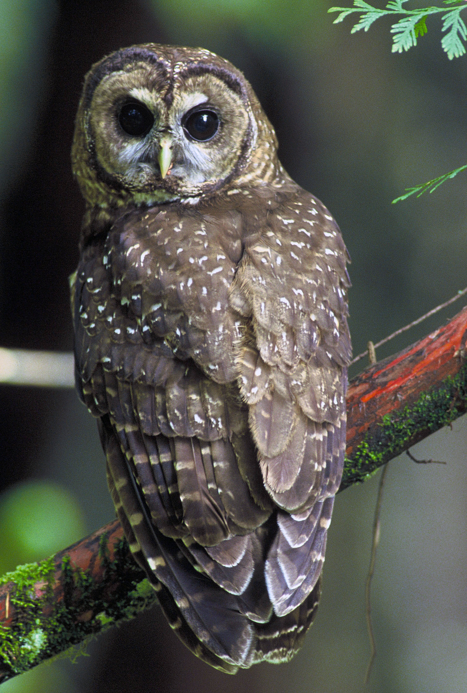

home
meadowlark
canary
most elusive bird
Rare birds
Rare Birds
rare birds are rare

Your browser can not handle this amazing Owl sound, time to upgrade your browser
Image Credit:
Wiktionary
Sound Credit:
Soundbible